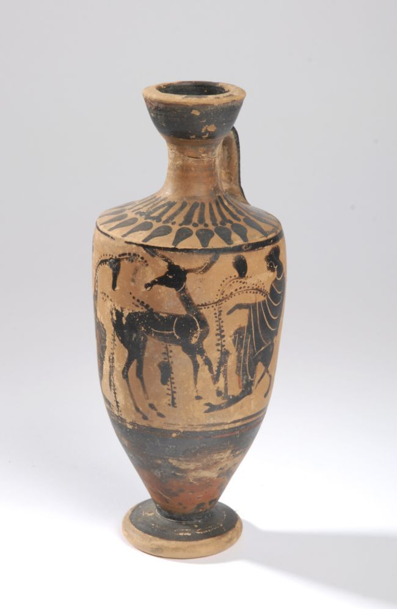
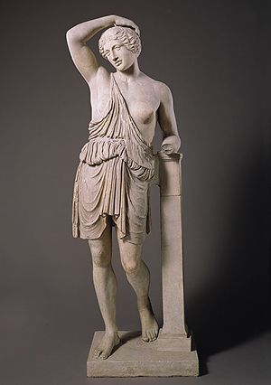
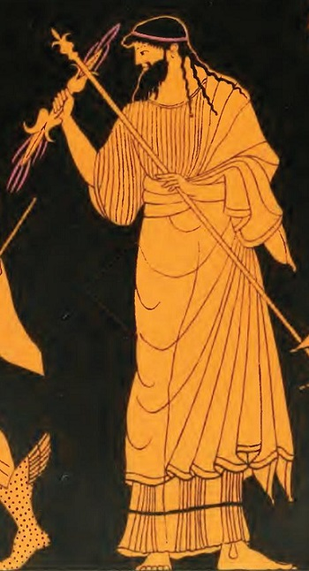
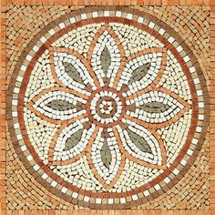

Dans l'Ancienne Grèce les Grecs on fais la poterie et peinture avec les bon image. les personnes qui fais la poterie est appelé le potters.
Dans Ancienne Grèce les person as fais les statues est peinture les tres brilliant couleurs mais apres un long period de temps les statues on perdu son couleurs est devenu gris.
La plus fameux piece d'art dand l'Ancienne Grèce est la Parthenon Frieze. La Parthenon Frieze etais fait dans 443 BC et fais par Pheidias.

Les Grecs on fais l'art parce que il pense que L'art de la Grèce antique a souligné l'importance et les réalisations des êtres humains.
Dans l'Ancienne Grèce les personnes a fais les Mosaïquestres grands et beaux.
Cartwright, Marc, "Antient Greek Sculpter" June 3 2020 https://www.ancient.eu/Greek_Sculpture/